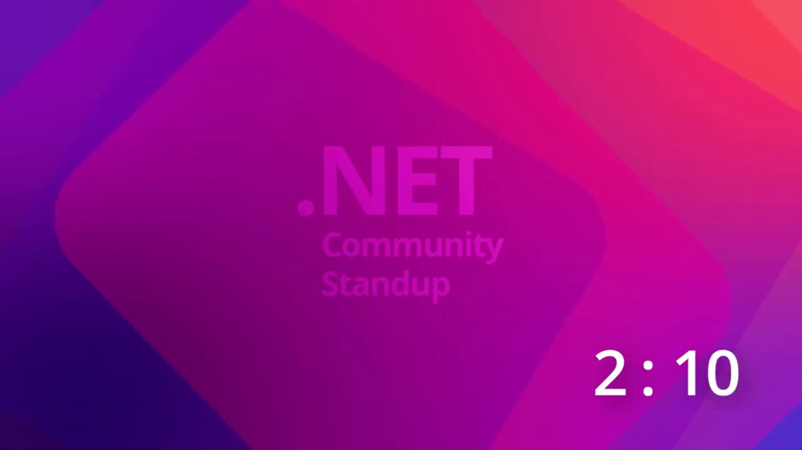
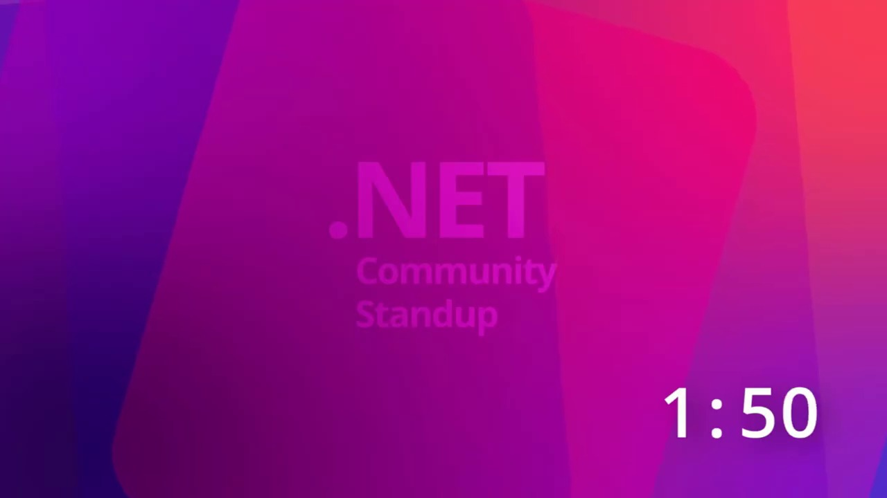
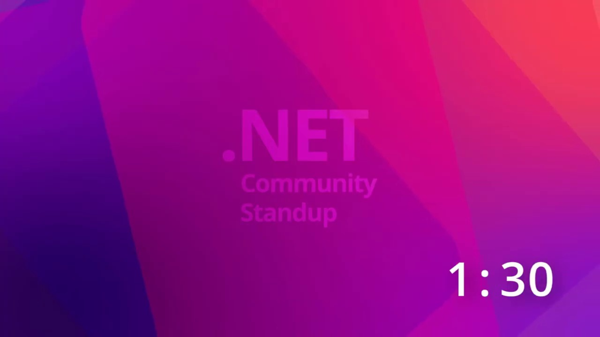
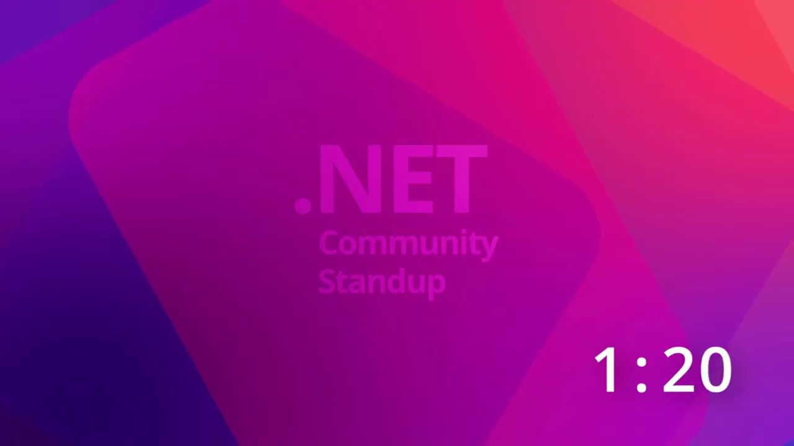
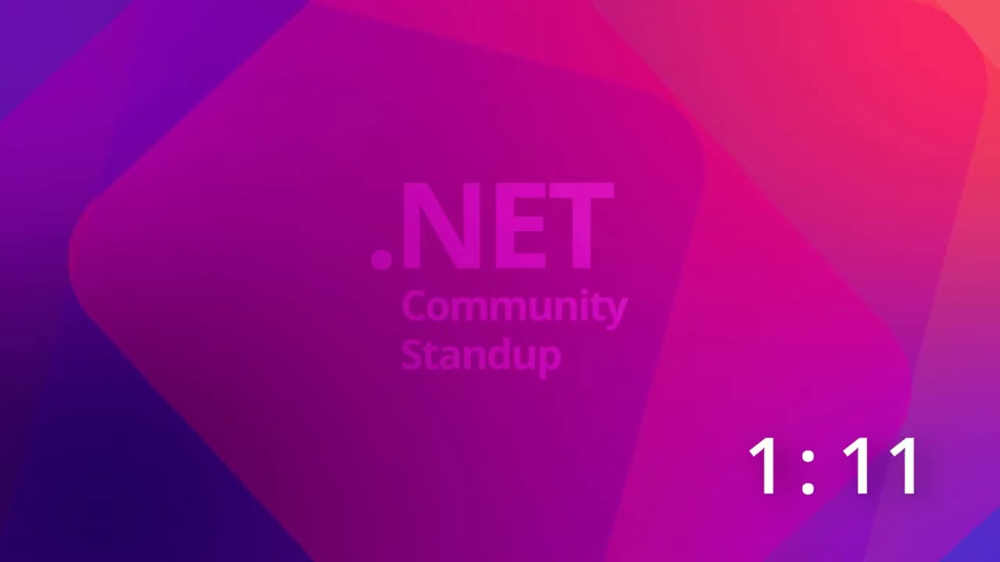

Key Moments









Summary & Script
.NET MAUI Engineering Team Live Stream: AI-Powered .NET MAUI Development with MauiDevFlow
Source: https://www.youtube.com/watch?v=vhrpjCJw1CY
Video ID: vhrpjCJw1CY
Summary of .NET MAUI and AI-Powered Development Stream
This YouTube stream features members of the .NET MAUI team, Gerald, Jacob, and Shane, discussing the advancements and integration of AI, specifically GitHub Copilot, into their development workflow and encouraging the community to do the same. They demonstrate the creation of a new .NET MAUI app using AI tools, highlighting the increasing productivity and efficiency gained through these technologies.
Major Sections/Topics Covered:
- Introduction and Team Introductions: The stream begins with a greeting and brief introductions of the .NET MAUI team members present: Gerald, Jacob, and Shane.
- .NET MAUI Community and Events: Mention of the upcoming .NET MAUI Day in Krakow, Poland, and a brief update on a side project an app for in-person conferences built with AI assistance.
- AI in .NET MAUI Development:
- Discussion on the increasing use of AI, particularly GitHub Copilot, within the .NET MAUI project.
- Demonstration of the "PR Dashboard" showing the significant contribution of AI (Copilot authors and reviewers) to merged pull requests.
- Mention of the recent .NET MAUI SR6 release, which heavily utilized AI in its development.
- Introduction of the term "Agentic Engineering" as a more professional way to refer to AI-powered development.
- Live Coding Session: Building a .NET MAUI App with AI:
- Jacob initiates a new Copilot session in "YOLO mode" (You Only Live Once), which grants Copilot broad permissions for increased autonomy.
- A pre-prepared prompt is shared and explained, outlining the creation of a mobile companion app for the
maui.netwebsite. - The prompt includes specific instructions: using the latest .NET MAUI docs, leveraging "Maui Skills" and "Dev Flow" (a new tool within Maui Labs), avoiding the Community Toolkit and emojis, and a preference for a specific "vibe."
- Discussion on the evolving perception of using AI in development, moving from hiding AI usage to celebrating it as a productivity booster.
- Emphasis on the importance of verifying AI-generated code and the team's acceptance of AI-assisted PRs.
- Mention of the "Maui Dev Flow" tool within the Maui Labs repository as a key component for AI-driven development.
- Future of AI in Development: The conversation touches upon how AI is changing the development landscape, encouraging developers to embrace these tools to enhance their productivity.
Key Takeaways:
- AI is integral to .NET MAUI development: The team is actively using and benefiting from AI tools like GitHub Copilot for code generation, review, and more, as evidenced by their PR metrics.
- Increased Productivity: AI tools are significantly boosting the productivity of the .NET MAUI team, enabling them to release features and updates more efficiently.
- Embrace AI Tools: Developers are encouraged to adopt AI tools like Copilot to enhance their own productivity and build applications faster.
- "YOLO Mode" for AI: The "YOLO mode" in Copilot CLI allows for more autonomous AI assistance, though users are advised to use it with caution.
- "Maui Dev Flow": This new tool within Maui Labs is presented as a key enabler for advanced AI-powered development workflows in .NET MAUI.
- Evolving Perceptions: The community and development teams are increasingly accepting and even celebrating the use of AI in software development.
- Verification is Crucial: While AI can significantly assist, human oversight and verification of the generated code remain essential.
Notable Quotes:
- "Vibe coded it because that's what we do. That's all we do." (referring to AI-generated code)
- "Agentic engineering. Like it. That sounds professional enough to confuse people to think that we're actually still..." (jokingly referring to AI-powered development)
- "So, let us know how that goes, um, in the repository. But yeah, you can see like we're going crazy crazy hard on this stuff, um, which has really, really been amazing." (regarding the team's confidence in AI-assisted releases)
- "Copilot CLI is like you have tons all the tools are now co-pilots and AI, right?"
- "YOLO mode. You only live once. So you start copilot- yolo and it just gets all the permissions it needs. It can do access everything. It can just do whatever it wants."
- "My ugly English then told the co copilot to use the plan modes to prepare this prompt for me..." (Jacob describing his prompt preparation)
- "Don't stress out that you didn't look at it too much. Like just create the PR because we sort of accept the fact that we can, you know, use agents to interpret what you did and then improve." (Gerald on accepting AI-assisted PRs)
- "Don't bother me until my agents are happy." (jokingly referring to the AI review process)
Podcast Script
JORDAN: Hey everyone, and welcome back to another episode! Happy May 1st, wherever you are tuning in from.
MIKE: Happy May 1st! It's great to have you all here, especially on what's a holiday for many. Today, we're diving into something pretty exciting that's been a big focus for the .NET MAUI team: leveraging AI and Copilot to boost productivity.
JORDAN: Absolutely. We've seen a huge push with AI-assisted development, and the MAUI team is really embracing it. We’ve even been talking about new terms like "agentic engineering," which sounds super professional.
MIKE: Agentic engineering! I love it. It sounds like we're evolving from just "vibe coding" to something more structured, even though the underlying tools are making development feel that much more intuitive.
JORDAN: Right? And it's not just talk; they're actually tracking the impact. We saw a dashboard showing a significant increase in merged PRs, with a large portion being authored or reviewed by Copilot. It’s impressive to see this adoption.
MIKE: That's a fantastic metric. It shows that these tools aren't just a novelty; they're actively contributing to the project's progress. And they're not just keeping it in-house; they want to empower us to be more productive too.
JORDAN: Exactly. The goal is to make us more successful building MAUI apps using AI and Copilot. And to show us how, we've got Jacob here today with a cool idea.
MIKE: He's going to walk us through creating a mobile companion app for Maui Verse, using Copilot and a new tool called Dev Flow from the MAUI Labs repository.
JORDAN: So, get ready for some live coding – or at least, AI-assisted live coding, which might be even scarier! Jacob's going to kick us off by launching a new Copilot session.
MIKE: And he's opting for "YOLO mode." I'm a little nervous, but it sounds like it gives Copilot all the permissions it needs to just go for it.
JORDAN: He emphasized that while he uses it frequently without issue, we should all use it with caution and at our own discretion. Standard disclaimer for anything that powerful!
MIKE: Always a good reminder. So, Jacob, what's the plan for this session, and what's in that prompt you've prepared?
JORDAN: He's feeding Copilot a prompt to create a .NET MAUI app called "Maui," which will be a mobile companion to the Maui Verse website. He’s also providing a URL to the latest .NET 10 MAUI docs for up-to-date information.
MIKE: That's smart. Models can sometimes lag behind the latest releases, so feeding it that documentation is crucial for accuracy. What else are you telling Copilot?
JORDAN: He’s specifying the use of local MAUI skills and importantly, Maui Dev Flow, which is the star of today's demo. He also explicitly asked Copilot not to use the community toolkit this time, aiming for a cleaner MAUI experience.
MIKE: And, of course, the classic instruction: no emojis! He wants to avoid any hint that the code was AI-generated, which brings up an interesting point.
JORDAN: Right, it's a reversal from trying to hide AI usage to showcasing it. The idea is that as long as you're in control and verifying the output, there’s no shame in leveraging these tools.
MIKE: I completely agree. It's a shift in perception. Instead of "I wrote this code," it's becoming "This powerful AI assisted me, and look at what we built together!" And it sounds like the MAUI team is embracing that fully.
JORDAN: They are. They even touched on how PRs from community members using Copilot are accepted, with the understanding that agents will also review them before human eyes. It's like a whole AI-powered workflow.
MIKE: That's fascinating. So, the agents get happy first, and then the humans chime in. It really shows how integrated this process has become for them.
JORDAN: It really does. And that acceptance is growing across the board. It’s a sign of maturity in how we use and trust these AI development tools.
MIKE: So, for today's demo, we’ve got the prompt set, Copilot is ready, and we’re about to see how this "agentic engineering" helps build out the Maui Verse companion app. Let’s see what magic unfolds!